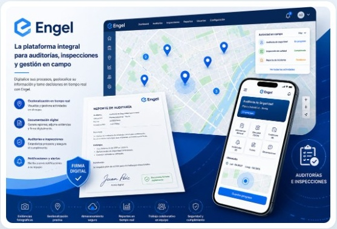

Registrar
Activos, equipos, instalaciones y actividades.
GESTIÓN INTELIGENTE DE OPERACIONES
La plataforma que se adapta a su organización, no al contrario. ENGEL integra procesos, activos, equipos, instalaciones, evidencias, documentos, ubicación e historial en un solo entorno.
¿QUÉ ES ENGEL?
Registre lo que tiene, ubique dónde está, documente lo que ocurre, programe actividades y conserve toda la historia.
Activos, equipos, instalaciones y actividades.
Datos, fotografías, archivos y evidencias.
Responsables, fechas, ubicaciones y avances.
Información e historial cuando se necesitan.
LA OPERACIÓN COMPLETA, EN UNA VISTA
ENGEL conecta la captura operativa, la localización, las evidencias y los reportes para que cada nivel de la organización trabaje con información confiable.

PANAMÁ AVANZA HACIA UNA GESTIÓN DIGITAL
Panamá impulsa el uso de medios electrónicos para avanzar hacia una gestión pública más ágil y eficiente. ENGEL convierte esa transformación en una herramienta práctica para el día a día.
Marco de referencia: Ley 83 de 2012 y Ley 144 de 2020.
LA DIFERENCIA DE ENGEL
Plantillas y modelos configurables permiten definir qué información debe recopilarse y cómo organizarla para cada elemento o actividad.
DEL PAPEL A LA GESTIÓN DIGITAL
Es transformar la manera en que la organización registra, controla, documenta, consulta y da seguimiento.
CAPACIDADES INTEGRADAS
Cada módulo comparte datos y contexto, evitando duplicaciones y conservando una trazabilidad completa.
Activos y registros visibles sobre el mapa.
Fotografías asociadas al registro y al lugar.
Acceso mediante QR, NFC u otros códigos.
Manuales, informes, certificados y archivos.
Fechas, avisos y recordatorios asociados.
La información adecuada para cada proceso.
ENGEL EN CAMPO
IDENTIDAD E HISTORIA DEL ACTIVO
BENEFICIOS
El impacto se vincula con la realidad y los procesos de cada organización.
Mayor control, trazabilidad e información organizada.
Procesos más ágiles, ordenados y fáciles de seguir.
Menos reprocesos y mejor uso de los recursos.
Gestión pública más eficiente y transparente.
DEL CAMPO A LA DIRECCIÓN
ENGEL conecta la operación cotidiana con la supervisión y la toma de decisiones.
Registra donde ocurre el proceso.
Consulta, verifica y da seguimiento.
Organiza y controla la información.
Decide con información estructurada.
UNA PLATAFORMA. DIFERENTES SECTORES
Una base tecnológica flexible para organizaciones públicas y privadas con necesidades operativas diversas.
Censos, inspecciones, activos y servicios.
Equipos, instalaciones y mantenimiento.
Supervisión, avances y documentación.
Operaciones, equipos e inspecciones.
CÓMO EMPEZAR
Una ruta concreta de adopción que reduce fricción y permite evolucionar con resultados.
Analizamos el proceso actual.
Acordamos información y controles.
Adaptamos ENGEL.
Capacitamos y desplegamos.
Ajustamos y ampliamos.
¿QUÉ PROCESO NECESITA TRANSFORMAR?
No le pedimos que cambie su forma de trabajar para adaptarse al software. Configuramos ENGEL para adaptarse a la forma en que usted trabaja.
Digitalización · Control · Trazabilidad · Eficiencia
Conversemos sobre sus procesos